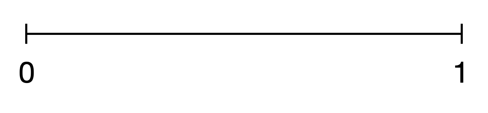
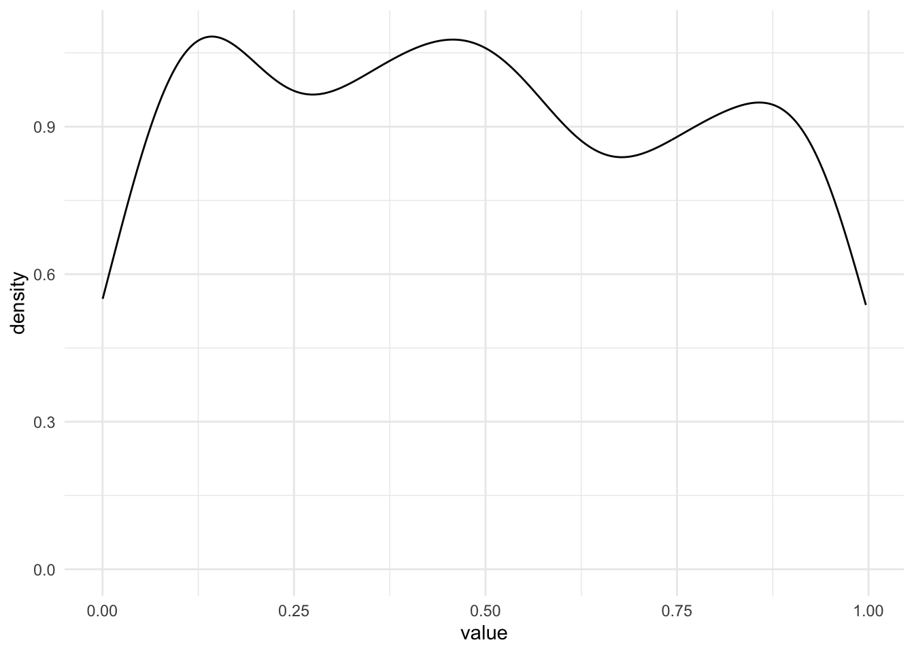
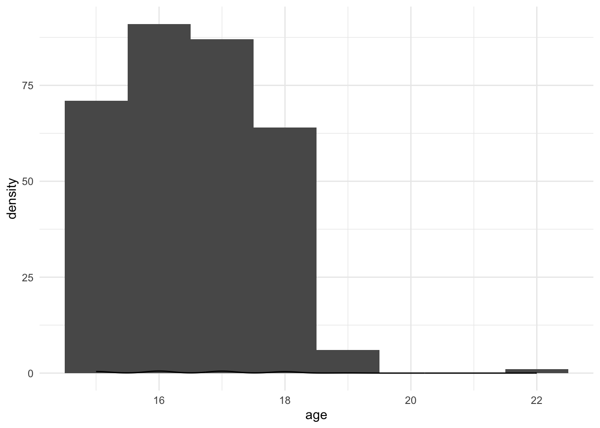
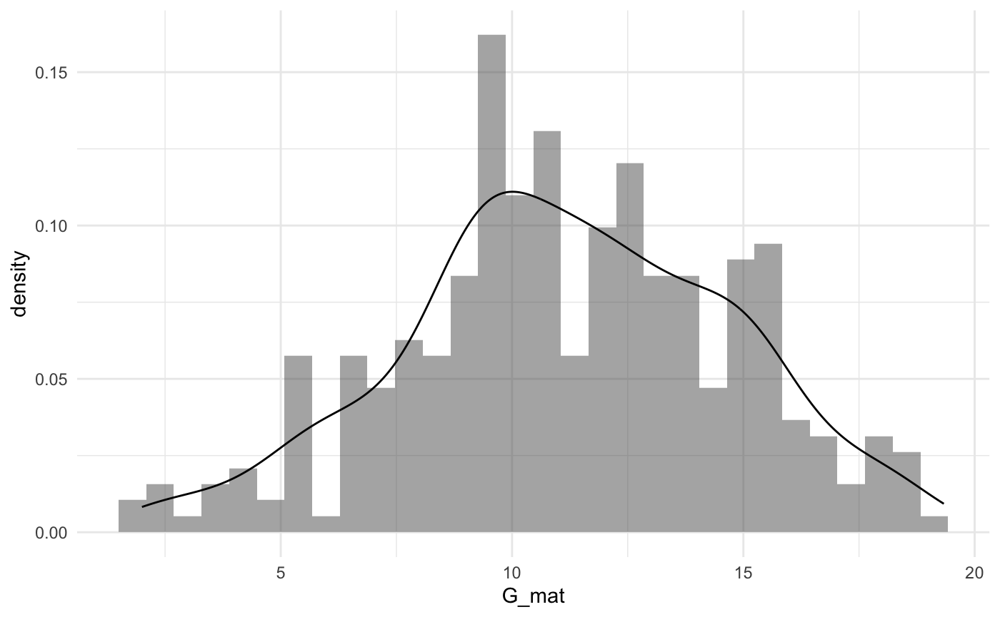
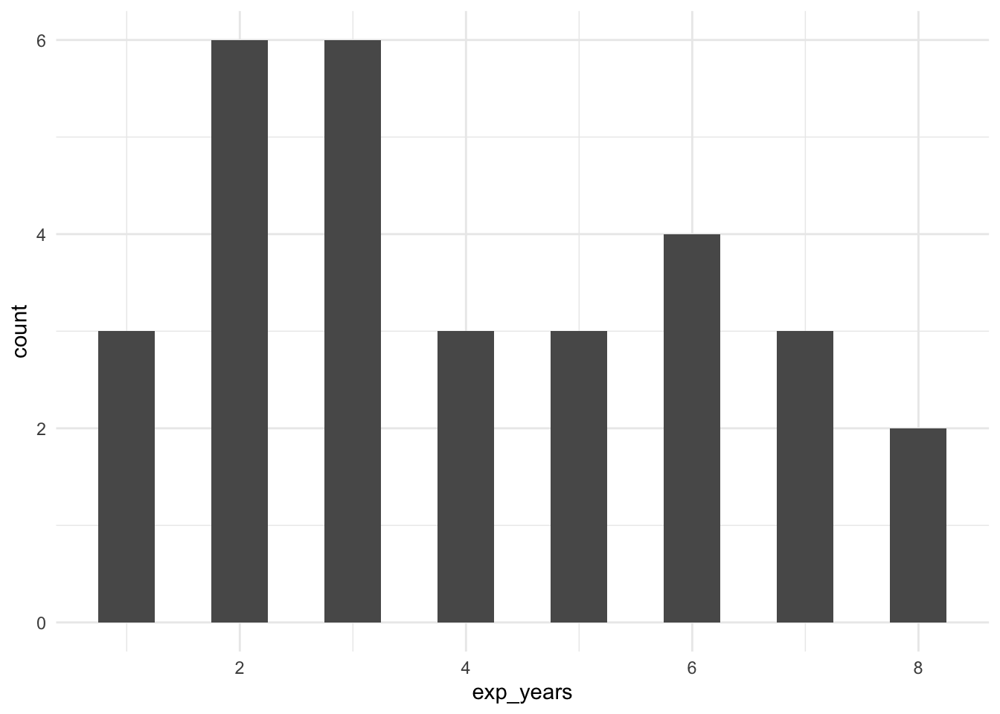

4 Вероятность и случайные величины
4.1 Случайная величина
Мы немного поговорили про переменные, они же – признаки исследуего нами объекта (рост, вес, пол, уровень образования и так далее). Поговорили, что чтобы измерить признак, нужно привести в соответствие какое-либо значение из шкалы. Теперь давайте посмотрим на математический смысл переменных и их значений.
С математической точки зрения значения переменных являются случайными величинами. В теории вероятностей случайной величиной называется величина, которая в данный момент времени (момент измерения) может принимать только одно значение, которое нельзя предугадать точно (до измерения).
Нам нужно замерить рост? Можем ли мы заранее сказать, сколько точно вплоть до микрометров он будет составлять? Если нет, значит, мы провели испытание (статистический термин единичного исследования или измерения), в ходе которого случайная величина рост приняла определенное значение (мы привели ей в соответствие какое-то значение из количественной шкалы). Говоря статистическим языком, наступило событие или явление “РОСТ = 178 см”.
Нужно определить время реакции после выпитой кружки кофе? Все то же самое, время реакции – случайная величина.
Результат прохождения опросника – случайная величина.
Название ВУЗа, из которого пришел наш испытуемый – случайная величина.
Это понятие нужно нам для того, чтобы мы могли считать вероятности наступления определенных событий, то есть наших измеренных переменных. Дело в том, что про вероятности случайных величин нам плюс-минус понятно и просто, а вот если величина перестает быть случайной, расчет вероятности становится сложнее. И мы пока рассматриваем только случайные величины.
(Более подробный экскурс в случайный величины и теорию вероятностей можно получить в отличном учебнике Mathprofi http://mathprofi.ru/sluchainaya_velichina.html)
4.2 Вероятность
Что такое вероятность?
По сути, вероятность – это численно выраженая возможность наступления того или иного события.
Вероятность может рассматриваться как частота наступления уже свершившегося события: по тому, как часто оно происходило, можно оценить, какова вероятность его наступления в дальнейшем.
Здесь начинается неожиданная развилка: в зависимости от того, как мы понимаем вероятность, приравниваем ли ее к частоте, статистика делится на байесовскую (bayesian) и частотную (фреквинтистскую, frequentist). Статистика, в которой мы заменяем вероятности частотами, а не высчитываем вероятность по сложной формуле, и в которой мы будем работать – частотная (https://en.wikipedia.org/wiki/Frequentist_inference). То есть говоря о вероятности, мы будем понимать ее исключительно так же, как и частоту, забываем про существование условной вероятности, формулу полной вероятности и других сложных концепций: если бы мы провели много раз одно и то же исследование, скажем, тысячу, и посмотрели, сколько раз в этом исследовании выпадает результат, который нас интересует, мы бы сказали, что вероятность наступления этого события – это сколько раз оно выпадало из тысячи. И будем руководствоваться только этим смыслом.
Есть разные определения, в рамках статистики различают статистическое и геометрическое определение вероятностей. Можно углубиться на http://mathprofi.ru/sluchainaya_velichina.html. Разные определения вероятности используются в зависимости от того, с какими случайными величинами (СВ) мы работаем, различают два их типа:
- дискретные СВ
- непрерывные СВ
4.3 Дискретные СВ и статистическое определение вероятности
Самая часто используемая в теории вероятностей модель – бросание обычного шестигранного игрального кубика. Кубик отличает то, что всего возможно наступление 6 событий (не будем рассматривать, что кубик смещенный или какой-то неправильный). То есть область допустимых значений или область определения для случайной величины “бросок кубика” это 6 значений: \(D \in \{1, 2, 3, 4, 5, 6\}\)
Величина, область значений которой состоит из конечного числа натуральных чисел (1; 2; 3; 4; 5…), называется дискретной.
Для определения вероятности дискретной величны воспользуемся ее статистическим определением, не углубляясь в статистические термины: если при проведении испытания возможны \(n\) равновероятных исходов значений случайной величины \(A\), при этом в \(m\) из них случается интересующее нас конкретное событие \(A_{i}\),то вероятность наступления события \(P(A_{i}) = \frac{m}{n}\)

Бросание игрального кубика – это испытание, выпадение одной из граней – исход, а выпадение конкретно шестерки – событие.
Обозначим выпадние грани в результате бросания кубика буквой \(K\). Чему равна вероятность выпадения каждой грани \(K_{1}\), \(K_{2}\), \(K_{3}\), \(K_{4}\), \(K_{5}\), \(K_{6}\)?
По статистическому определению вероятности: возможных исходов всего – 6, интересующее нас событие случается в одном случае из 6, то есть: \(P(K_{1})\) = \(P(K_{2})\) = \(P(K_{3})\) = \(P(K_{4})\) = \(P(K_{5})\) = \(P(K_{6})\) = \(\frac{1}{6}\)
Важно, что все события равновероятны. Если бы мы жили в мире с кубиками со смещенным центром тяжести, выпадние граней не было бы равновероятным.
А чему равна полная вероятность?
Как можно вывести это математически из вероятностей наступления событий в бросании игрального кубика? \(P(K_{1})\) + \(P(K_{2})\) + \(P(K_{3})\) + \(P(K_{4})\) + \(P(K_{5})\) + \(P(K_{6})\) = \(1\)
Единичные события нас мало интересуют (предмет изучения теории вероятностей – массовые события), поэтому давайте представим, что мы бросили кубик несколько раз. Например, 20.
## [,1] [,2] [,3] [,4] [,5] [,6] [,7] [,8] [,9] [,10] [,11] [,12] [,13] [,14]
## Red 3 5 4 5 2 1 3 4 2 5 1 6 6 1
## [,15] [,16] [,17] [,18] [,19] [,20]
## Red 1 6 6 4 1 64.4 Столбчатая диаграмма (barplot)
Построим таблицу частот выпадения каждой грани
## Red
## 1 2 3 4 5 6
## 5 2 2 3 3 5## Red
## 1 2 3 4 5 6
## 0.25 0.10 0.10 0.15 0.15 0.25Можем наглядно посмотреть это на столбчатой (или столбиковой) диаграмме – графике, отображающем частоты встречаемости событий дискретной переменной.
## Warning in geom_bar(bins = 6, binwidth = 1): Ignoring unknown parameters:
## `bins` and `binwidth`
4.5 Непрерывные СВ и геометрическое определение вероятности
С непрерывными величинами чуть посложнее, поэтому нам понадобится геометрическое определение вероятности.
Построим отрезок на оси \(x\) от 0 до 1. 
Допустим, мы проводим испытание, где бесконечно малым курсором проводим по этому отрезку. Остановку курсора в какой-то точке обозначим за \(L\). Какова вероятность, что курсор остановится в точке с координатами \(x=0.4857856\)?
Сколько точек лежат в этом отрезке? Вспоминаем, что точка – бесконечно малая величина, поэтому на этом отрезке лежит бесконечное число точек. Область допустимых значений или область определения для случайной величины “остановка курсора в точке” – бесконечное число значений в диапазоне \(D \in [0;1]\)
Величина, область допустиимых значений которой состоит из бесконечного числа значений на каком-либо ненеулевом промежутке, которые невозможно посчитать, называется непрерывной.
Попробуем воспользоваться статистическим определением вероятности:
\(P(L_{.4857856}) = \frac{1}{множество всех точек на отрезке} = \frac{1}{\infty} \sim 0\)
В пределе это число равно 0.
Получается, что мы не можем посчитать математически (статистически), и приходится прибегать к геометрическому определению.
4.6 Гистограмма (histogram)
Построим таблицу и график частот для значений из отрезка. Для это сгенерируем набор из 10 случайных чисел в диапазоне [0;1].
## [1] 0.9148060 0.9370754 0.2861395 0.8304476 0.6417455 0.5190959 0.7365883
## [8] 0.1346666 0.6569923 0.7050648## line_sample
## 0.13466659723781 0.286139534786344 0.519095949130133 0.641745518893003
## 1 1 1 1
## 0.656992290401831 0.705064784036949 0.736588314641267 0.830447626067325
## 1 1 1 1
## 0.914806043496355 0.937075413297862
## 1 1## line_sample
## 0.13466659723781 0.286139534786344 0.519095949130133 0.641745518893003
## 0.1 0.1 0.1 0.1
## 0.656992290401831 0.705064784036949 0.736588314641267 0.830447626067325
## 0.1 0.1 0.1 0.1
## 0.914806043496355 0.937075413297862
## 0.1 0.1Видим, что все значения встретились только один раз. Построим график. Можем построить гистограмму для этих значений.
Гистограммы – это похожий на столбчатую диаграмму график, но, в отличие от столбчатой диаграммы, ширина столбца соответсвует не какому-то определенному значению переменной, а диапазону. Гистограмма используется исключительно для количественных данных или для порядковых данных с большим количеством градаций (например, данные от опросника, где респонденты отвечали по шкале от 1 до 7). Почему только количественные или порядковые: так как в каждый столбик входит целый диапазон, нам важно уместь расположить значения переменной на оси \(x\) слева направо в единственно верном порядке – что невозможно с номинативными данными. В гистограмме мы сами можем регулировать ширину столбика по оси \(x\), то есть задавать, сколько значений переменной \(x\) войдет в столбец. Если мы изменили диапазон по оси \(x\), то высота столбика тоже будут пересчитана в соответствии с частотой для этого диапазона. В столбчатой диаграмме мы так сделать не можем, по оси \(x\) всегда только одно значение, каждый столбик соотносится с конкретным значением переменной.
 Для кубика мы тоже можем построить гистограмму, потому что этот как раз пример порядковой шкалы с довольно большим количеством значений, но вернее для визуализации частоты выпадения гранец кубика все-тки подойдет столбчатая диаграмма. Если мы все-таки хотим построить гистограмму, она будет выглядеть так. Здесь каждому столбику соответствует одно значение грани
Для кубика мы тоже можем построить гистограмму, потому что этот как раз пример порядковой шкалы с довольно большим количеством значений, но вернее для визуализации частоты выпадения гранец кубика все-тки подойдет столбчатая диаграмма. Если мы все-таки хотим построить гистограмму, она будет выглядеть так. Здесь каждому столбику соответствует одно значение грани

А здесь – каждый столбец соответствует двум значениям граней (1-2, 3-4, 5-6)

Возвращаясь к графику с числами из диапазона от 0 до 1: вышло довольно странно – мы видели, что частота встречаемости разных значений – всегда была единичка, а на гистограмме кажется по-другому. Так происходит, потому что мы взяли только 10 очень конкретных крошечных значений из непрерывной величины, и нам попались какие-то значения – рядом друг с другом, и столбики для их частот “слиплись” в один большой столбик, и частота получилась не 1, а 2. А какие-то значения попались далеко друг от друга, поэтому их столбики слиплись не друг с другом, а с более близкими к ним столбиками, и на месте частоты для этого значения образовалась дырка.
Такой график для непрерывной величины не очень верный: чтобы стобики не “слипались” и не обманывали нас визуально, будто где-то в значениях есть дыра, для непрерывных величин мы будем использовать другой график – график плотности вероятности (probability density)
4.7 график плотности вероятности (density plot)
 Он тоже показывает так, будто какие-то значения более частые, какие-то менее – но ситуация уже гораздо лучше. Здесь мы сгенерировали 10 значений, а если нам вдруг нужно визуализировать все возможные значения из отрезка [0;1], а х бесконечность? Тогда гистограмма вообще потеряет всякий смысл, так как разбивает все значения на столбики из конечных интервалов, а вот непрерывная линию будет подходящей – в непрерывной линии бесконечное число значений!
Почему плотности вероятности, а не самой вероятности? Потому что как мы вывели выше, если бы мы считали точно именно вероятность, она бы стремилась к нулю. А засчет того, что это именно плотность, буквально, “тут побольше значений”, “тут поменьше значений” – получается осмысленный график. То есть, простыми словами, плотность вероятности – характер распределения вероятностей в самом значении и его окрестности. Если в интервале [0.25;0.35] оказалось (чисто случайно) мало значений, а в интервале [0.58;0.65] оказалось побольше – то на графике плотности вероятности мы увидим различия в вероятности для этих интервалов, хотя вероятность встретить каждое конкретное очень точно заданное число (например, 0.4857856) стремится к 0. Мы не будем рассматривать математически смысл плотности вероятности, но функция плотности вероятности является производной от функции самой вероятности.
Попробуем сгенерировать этот же график для 500 и 10 000 точек и посмотреть, к чему будет стремиться график плотности вероятности в случае, когда мы случайно генерируем множество значений, все из которых равновероятны?
line_sample_500 <- runif(500, min=0, max=1)
as_tibble(line_sample_500) %>%
ggplot(aes(x=value)) +
geom_density() +
theme_minimal() 10000 точек из этого же диапазона
10000 точек из этого же диапазона
line_sample_10000 <- runif(10000, min=0, max=1)
as_tibble(line_sample_10000) %>%
ggplot(aes(x=value)) +
geom_density() +
theme_minimal()
Как выбрать, какой график подходит лучше всего для описания распределения переменной? Для этого нужно сначала ответить на вопрос, в какой шкале закодирвана переменная, что это за данные. И далее можно руководствоваться следующей логикой:
То есть выходит следующая логика:
- для визуализации категориальных данных (номинативная шкала и порядковая с небольшим числом градаций (например, хотим визуализировать количество выбравших в опроснике ответ “1”, “2”, “3”) или не численными градациями вида уровня образования) используют столбчатую диаграмму
- для визуализации количественных данных на маленьком диапазоне (шкала отношений и относительная шкала, но разделенные на диапазоны), где хорошо выделяются интервалы, и для визуализации порядковых данных с большим количеством градаций (например, опросник со шкалой от 1 до 7) – используют гистограмму;
- для визуализации классических количественных данных (шкала отношений, относительная шкала) – используется график плотности вероятности.
Часто можно встретить картинку, где график плотности вероятности наложен на гистограмму – если данные позволяют нарисовать такую картинку, это хороший вариант получить побольше информации из графика.

На примере данных про выгорание:
| teacher_number | age | exp_years | exp_scaled | burnout_MBI | univer |
|---|---|---|---|---|---|
| 1 | 37 | 5 | от 3 до 5 | 69 | MSU |
| 2 | 40 | 3 | от 3 до 5 | 49 | HSE |
| 3 | 27 | 5 | от 3 до 5 | 68 | MSU |
| 4 | 27 | 1 | от 1 до 2 | 38 | RANEPA |
| 5 | 29 | 3 | от 3 до 5 | 50 | HSE |
| 6 | 43 | 4 | от 3 до 5 | 20 | RANEPA |
| 7 | 58 | 8 | больше 5 | 22 | MSU |
| 8 | 23 | 4 | от 3 до 5 | 34 | HSE |
| 9 | 35 | 4 | от 3 до 5 | 38 | MSU |
| 10 | 47 | 1 | от 1 до 2 | 62 | RANEPA |
| 11 | 27 | 3 | от 3 до 5 | 43 | HSE |
| 12 | 29 | 7 | больше 5 | 66 | RANEPA |
| 13 | 39 | 7 | больше 5 | 22 | MSU |
| 14 | 48 | 6 | больше 5 | 34 | HSE |
| 15 | 41 | 5 | от 3 до 5 | 70 | MSU |
| 16 | 45 | 2 | от 1 до 2 | 36 | RANEPA |
| 17 | 48 | 3 | от 3 до 5 | 45 | HSE |
| 18 | 24 | 8 | больше 5 | 43 | RANEPA |
| 19 | 51 | 8 | больше 5 | 59 | MSU |
| 20 | 39 | 3 | от 3 до 5 | 34 | HSE |
| 21 | 35 | 1 | от 1 до 2 | 58 | MSU |
| 22 | 42 | 4 | от 3 до 5 | 52 | RANEPA |
| 23 | 45 | 1 | от 1 до 2 | 41 | HSE |
| 24 | 39 | 5 | от 3 до 5 | 46 | RANEPA |
| 25 | 42 | 8 | больше 5 | 26 | MSU |
| 26 | 23 | 5 | от 3 до 5 | 60 | HSE |
| 27 | 46 | 4 | от 3 до 5 | 26 | MSU |
| 28 | 60 | 7 | больше 5 | 30 | RANEPA |
| 29 | 25 | 7 | больше 5 | 62 | HSE |
| 30 | 39 | 7 | больше 5 | 19 | RANEPA |
Для визуализации порядковой переменной Опыта преподавания exp_scaled

Для визуализации количественной переменной Возраст age (шкала отношений)

Итак, запомнили, что мы рассматриваем признаки (переменные) как случайные величины, они могут быть дисркетные и непрерывные, и их вероятности описываются определенными законами распределения.